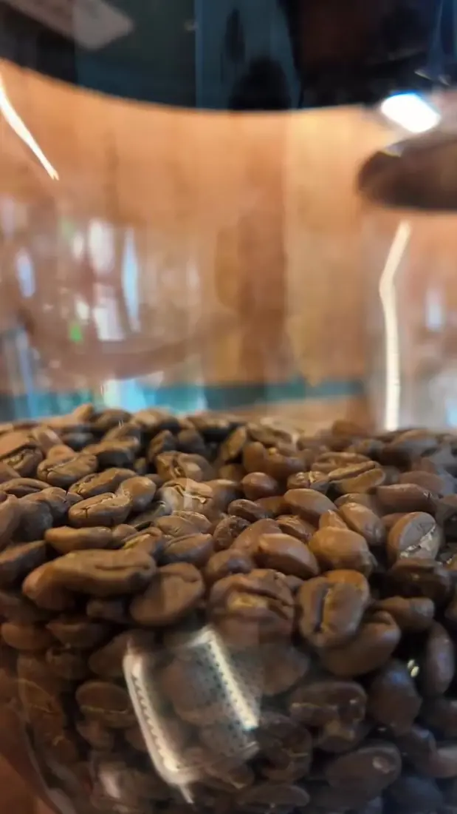
01 · Brasil
Paraíso
Origen Brasil. Para tu espresso de todos los días o para llevar a casa.
Café de especialidadSan Miguel de Tucumán
Sección 01 — El arte
Leche sedosa, pulso firme y una rosetta que ya es firma de la casa. Servida en la taza amarilla de siempre.
Sección 02 — La extracción
Cada espresso pasa por las manos de nuestras baristas: molienda, distribución, tampeo y una extracción precisa.
Sección 03 — Orígenes
Cada café tiene su propia personalidad, aromas y sabores. Descubrí la diversidad del café con nuestros orígenes disponibles.

01 · Brasil
Origen Brasil. Para tu espresso de todos los días o para llevar a casa.
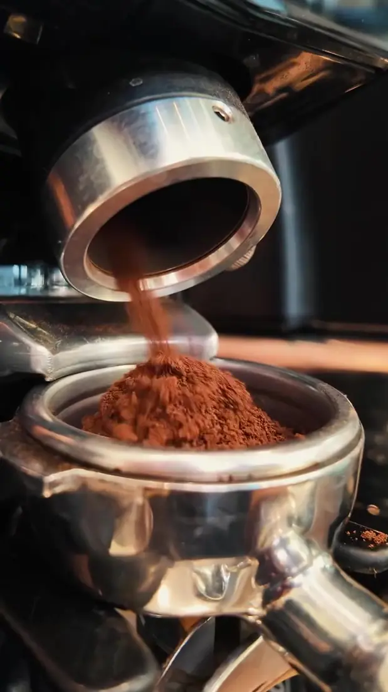
02 · Colombia
Origen Colombia. Preguntale a tu barista cómo prepararlo.
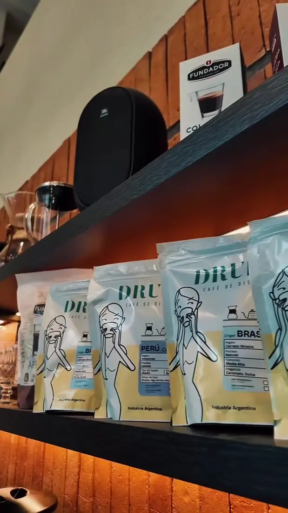
Tenemos café en grano para que prepares tu café de especialidad donde quieras.
Sección 04 — Filtrado
Cada taza la preparan nuestras baristas, capacitadas y apasionadas por el café de especialidad, buscando una extracción precisa.
Sección 05 — Refrescate
Espresso, leche fría y hielo. El sabor del capuccino clásico para los días de calor en Tucumán.
“Vení, sentite como en casa y descubrí por qué Valmass es tu lugar favorito.”
— Valmass Café de Especialidad
Sección 07 — El lugar
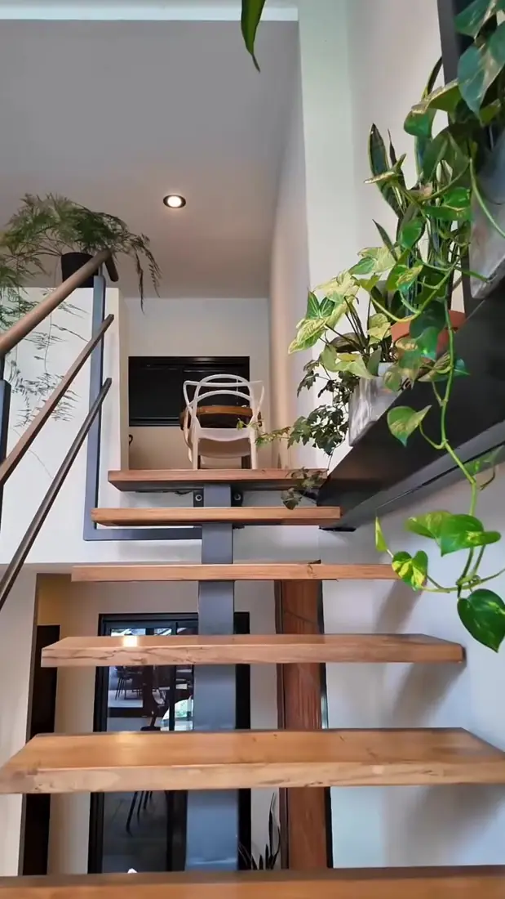
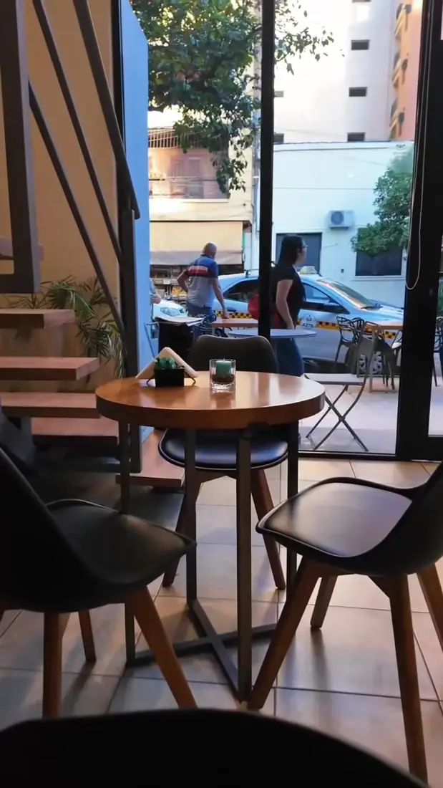
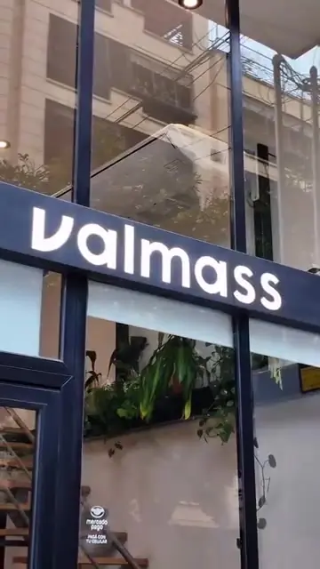
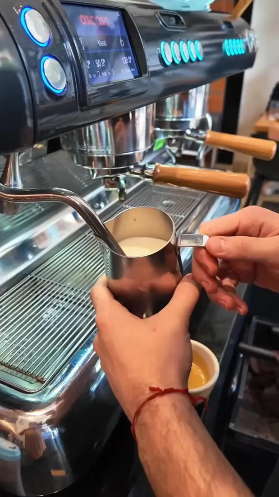
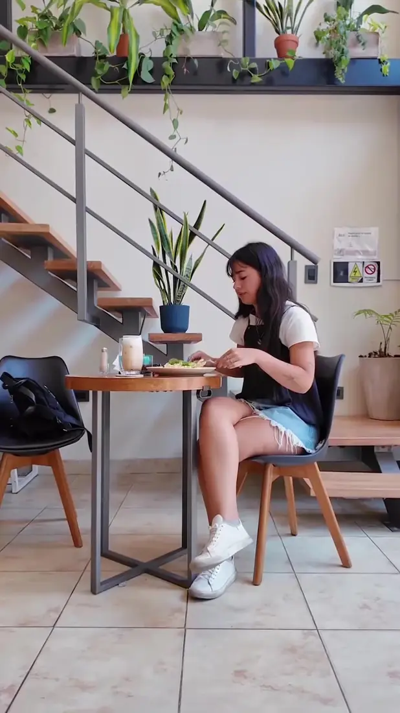
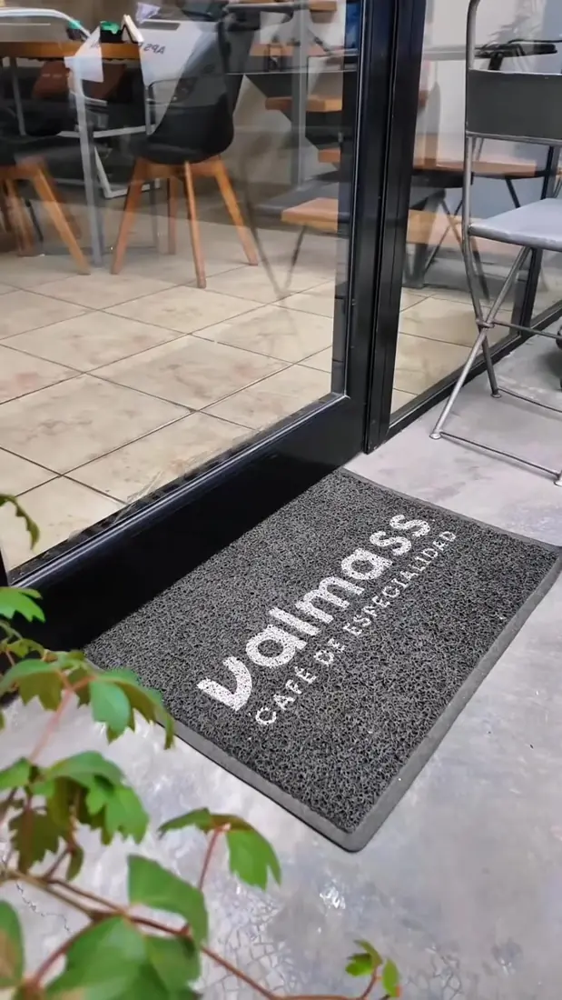
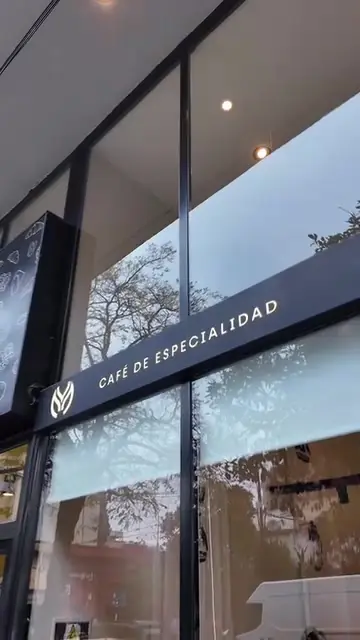
Decoración renovada para que cada momento sea aún más especial.
Sección 08 — Visitanos
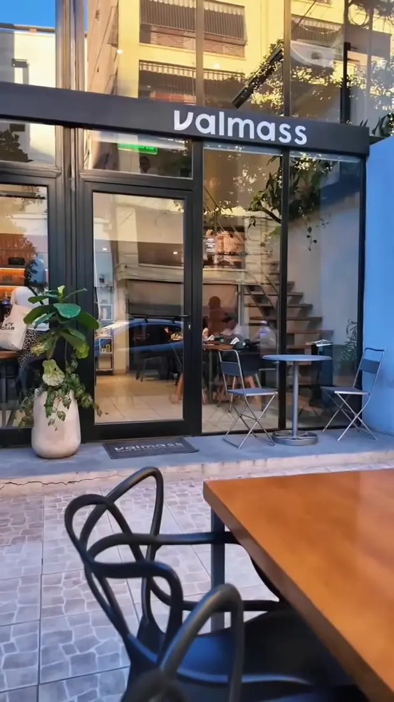